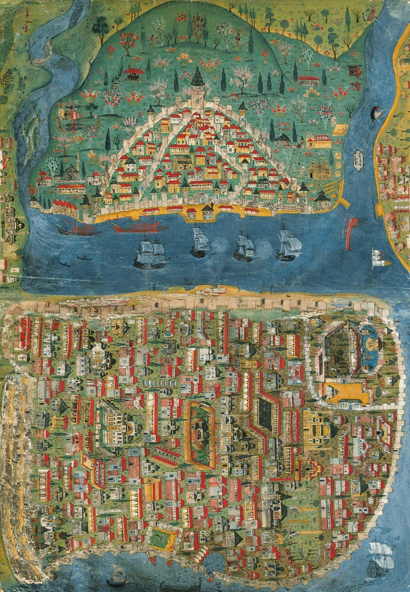
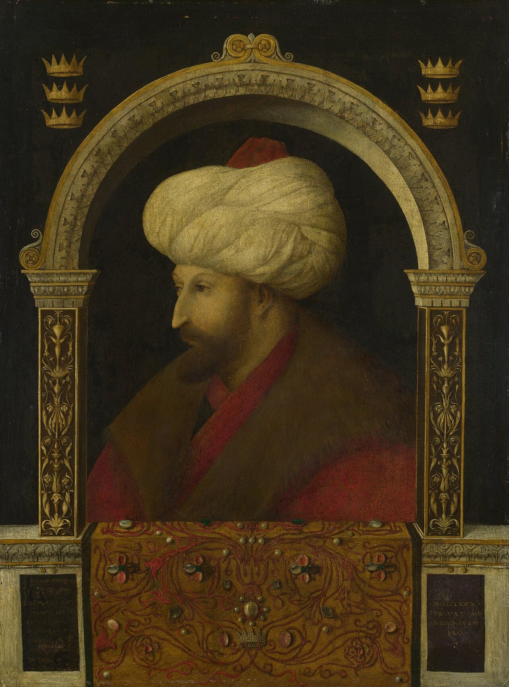
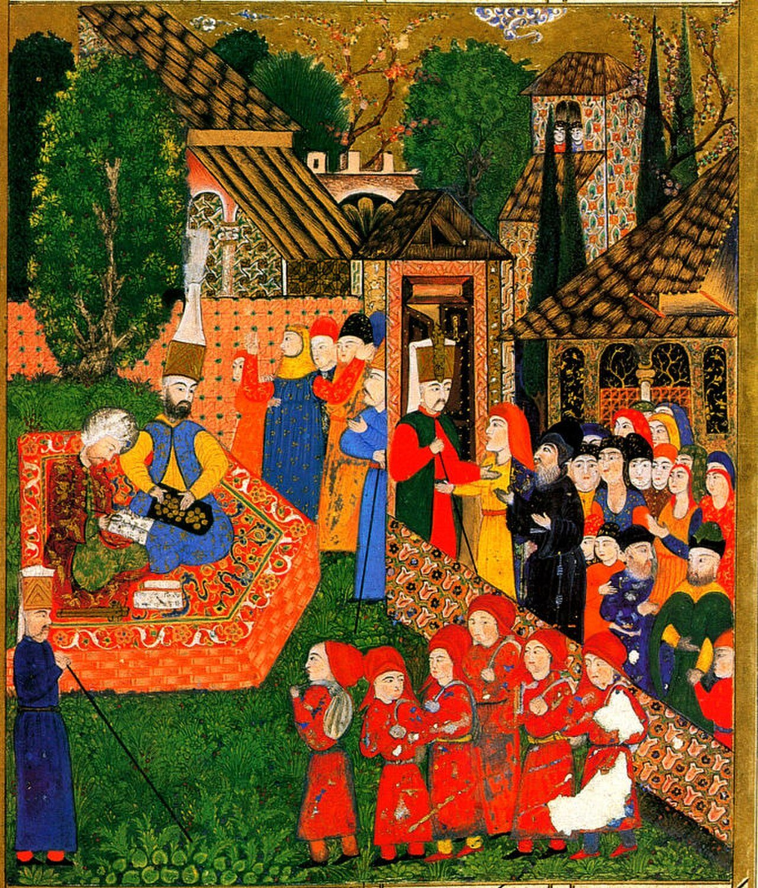
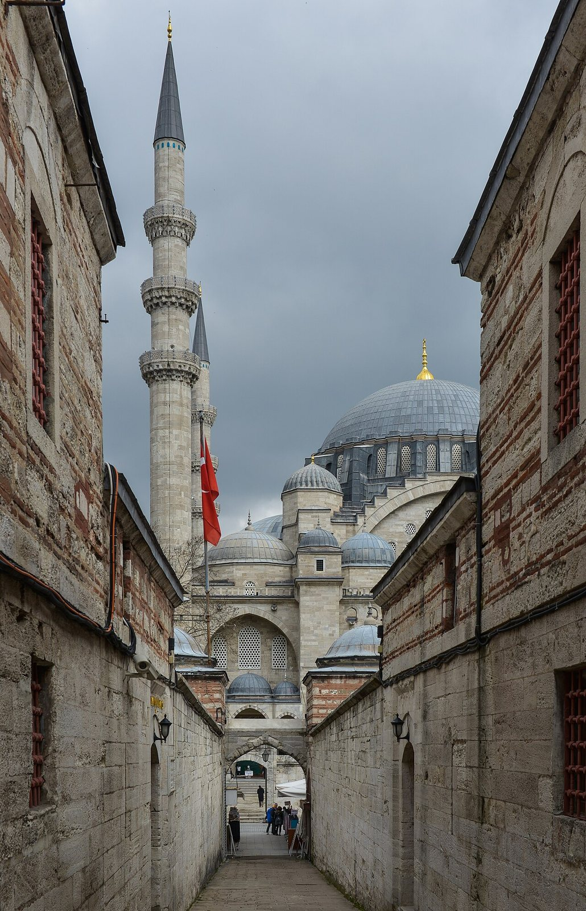

사진 · 마트라크츠 나수흐의 이스탄불 지도
중학교 역사① · 4단원 지역 세계의 교류와 변화
이스탄불오스만 제국
마트라크츠 나수흐, 이스탄불 지도(1537 무렵) · 퍼블릭 도메인
“오스만 제국은 어떻게
오스만 제국은 어떻게
600년 넘게 이어졌을까?
사실세 대륙에 걸친 제국(1299~1922)
해석다양한 사람을 다스린 방법
확장유럽과의 교류와 충돌
1453
사실메흐메트 2세가 콘스탄티노폴리스를 정복하다
해석비잔티움 제국이 끝나다
확장이스탄불, 새 수도

사진 · 술탄은 왜 베네치아의
화가를 불렀을까?
술탄은 왜 베네치아의
화가를 불렀을까?
누가젠틸레 벨리니
언제1479~1480년 이스탄불
사실·주장유럽 화가가 그린 술탄
젠틸레 벨리니, 「메흐메트 2세」(1480) · 런던 내셔널 갤러리 · 퍼블릭 도메인

사진 · 이 소년들은
어디로 가는 걸까?
이 소년들은
어디로 가는 걸까?
사실데브시르메
해석술탄의 군인 · 관리가 되다
확장빼앗김일까, 출세길일까
『쉴레이만나메』 삽화, 데브시르메(16세기) · 퍼블릭 도메인
밀레트
사실종교 공동체별 자치
해석정교회 · 아르메니아 교회 · 유대교
확장같은 법, 다른 법

사진 · 이 모스크는
누구의 이름일까?
이 모스크는
누구의 이름일까?
사실쉴레이만 1세(재위 1520~1566)
해석건축가 미마르 시난
확장‘입법자’와 ‘대제’
쉴레이마니예 모스크 · 사진 Arild Vågen · CC BY-SA 3.0
1529
사실오스만 군대가 빈을 포위하다
해석유럽이 느낀 두려움
확장프랑스는 오스만과 손잡다
오스만을 거쳐 간 것
커피예멘 → 이스탄불 → 유럽
튤립오스만 정원 → 네덜란드
향신료 · 비단아시아와 유럽 사이
1571
사실레판토 해전, 오스만 함대가 지다
주장‘오스만 몰락의 시작’?
사실이듬해 함대를 다시 만들다
아야소피아
537성당
1453모스크
1934 · 2020박물관, 다시 모스크
“오스만 제국이 오래 이어진 힘은 이었다.